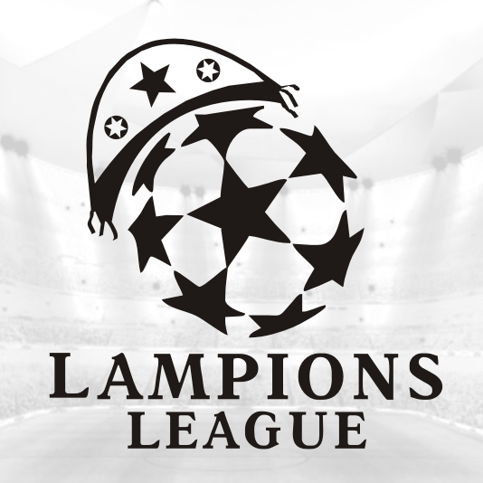
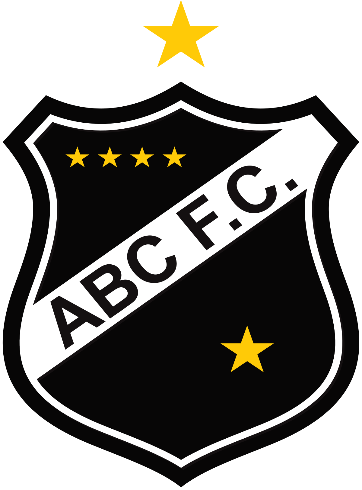
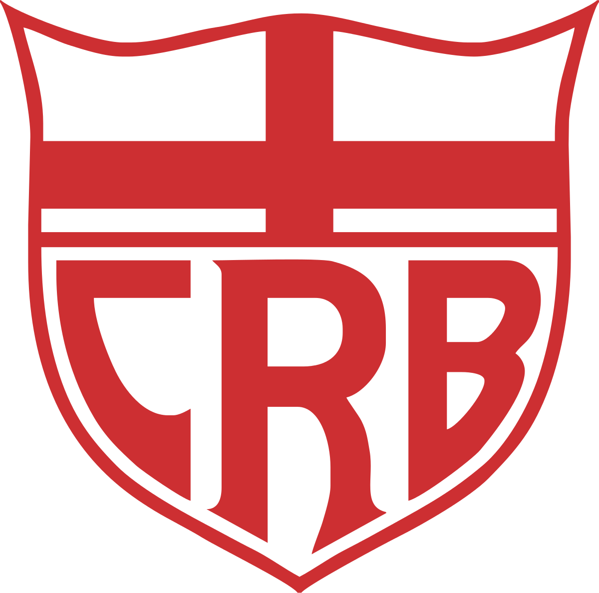
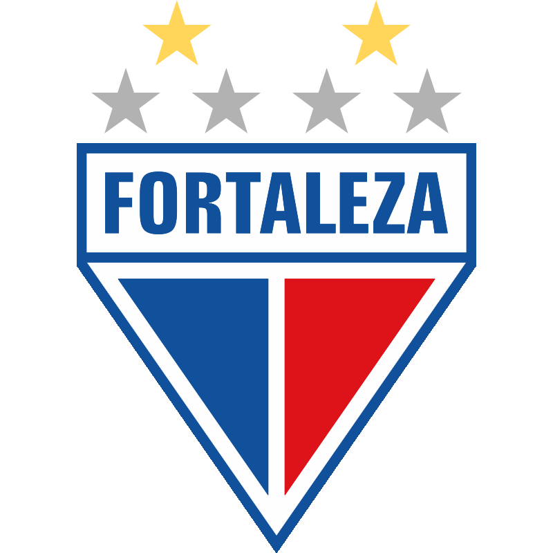
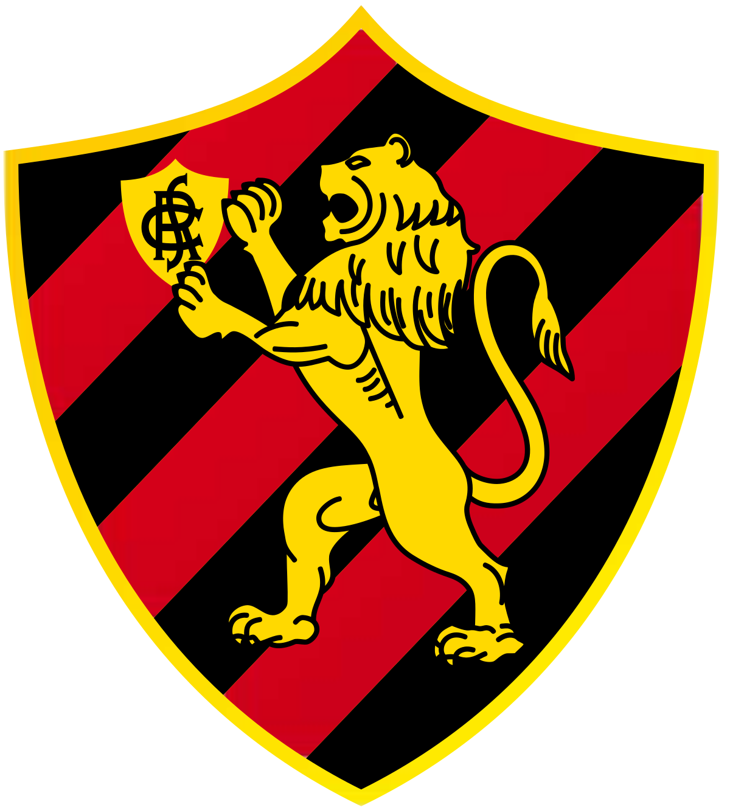
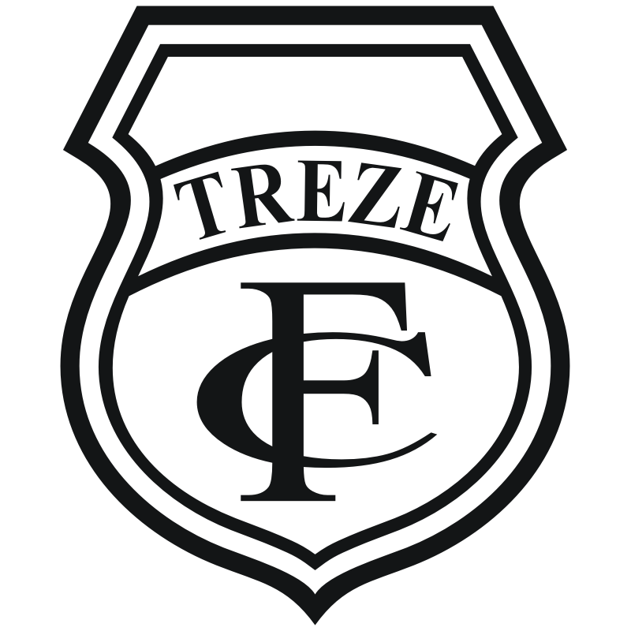

A tradicional Copa do Nordeste é apelidada de Lampions League, e busca na competição do velho continente, a receita para o grande sucesso. Fundada em 1994, a Lampions League é um torneio envolvendo 16 equipes do Nordeste divididos então em dois grupos com oito clubes em cada. Os quatro melhores de cada chave, avançam à fase do mata-mata. Com o intuito de trazer mais visibilidade e investimento às equipes da região, que normalmente são esquecidas pelas mídias do eixo Sul-Sudeste, o torneio nem sempre teve a credibilidade atual